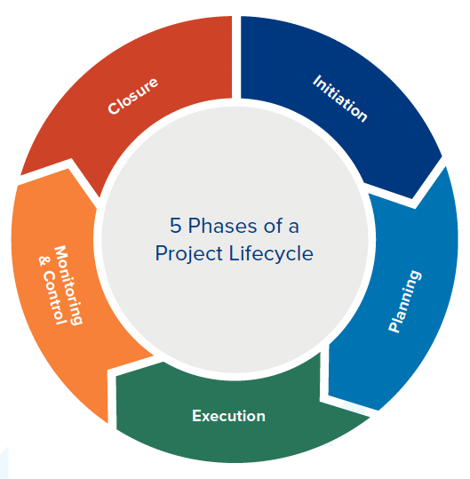
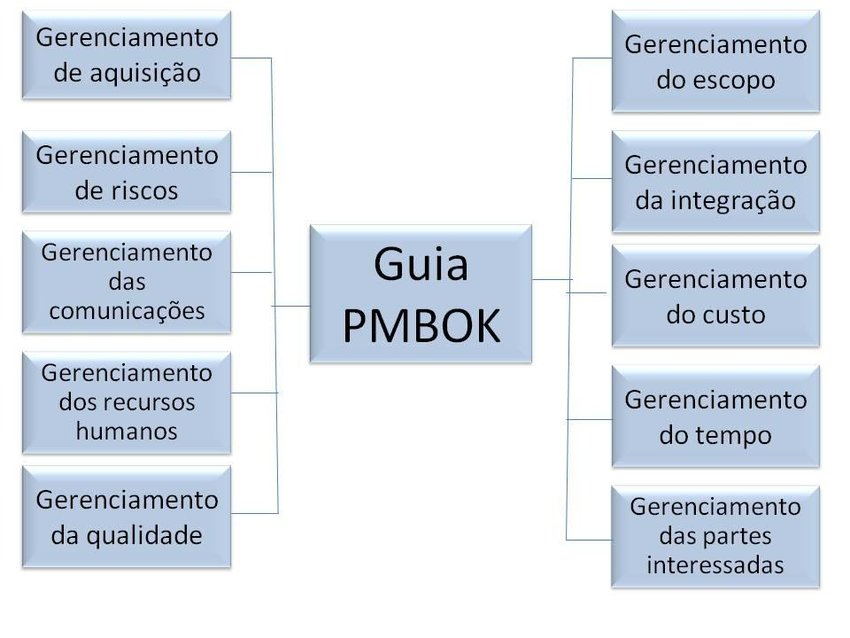
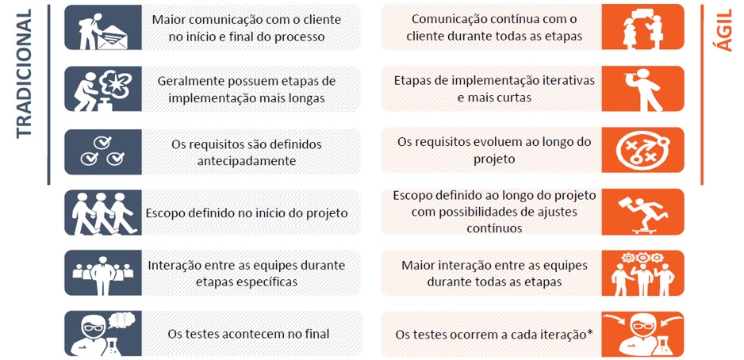

Trabalho de Gerenciamento de Projetos de TI
Mateus Jairan de Sousa Rodrigues
Marcos Alexandre Moraes da Silva
Fundamentos de Projetos de TI
Introdução ao Gerenciamento de Projetos de TI
A introdução ao gerenciamento de projetos de TI abrange a aplicação de técnicas e práticas específicas para planejar, executar e controlar projetos tecnológicos, com o objetivo de alcançar metas e atender às necessidades dos stakeholders. Esse campo é crucial devido à complexidade e ao ritmo acelerado das mudanças na tecnologia da informação. O gerenciamento de projetos de TI envolve a definição clara de escopo, cronograma, orçamento e recursos, bem como a gestão de riscos e a comunicação eficaz entre as partes interessadas. Utilizando metodologias ágeis ou tradicionais, os gerentes de projetos de TI garantem que os projetos sejam entregues com sucesso, dentro dos requisitos estabelecidos e dentro dos prazos e orçamentos previstos.
Ciclo de Vida dos Projetos
O ciclo de vida dos projetos é uma estrutura que define as fases pelas quais um projeto passa desde o seu início até a sua conclusão. Em geral, esse ciclo é dividido em etapas principais, como iniciação, planejamento, execução, monitoramento e controle, e encerramento. Cada fase tem objetivos específicos e entregáveis que contribuem para o sucesso do projeto. Durante a iniciação, define-se o escopo e os requisitos; no planejamento, elabora-se um plano detalhado para orientar a execução; a fase de execução envolve a implementação das atividades planejadas; e o monitoramento e controle garantem que o projeto esteja no caminho certo, permitindo ajustes conforme necessário. Por fim, o encerramento formaliza a conclusão do projeto, com a entrega dos resultados e a análise das lições aprendidas. Esse ciclo proporciona uma abordagem estruturada para a gestão eficiente dos projetos, assegurando que os objetivos sejam atingidos e os recursos utilizados de maneira eficaz.

Papel do Gerente de Projeos em TI
O gerente de projetos de TI é o profissional responsável por planejar, executar, monitorar e finalizar projetos tecnológicos dentro de uma organização. Seu papel envolve a coordenação de equipes multidisciplinares, a definição de metas e prazos, a alocação de recursos e a garantia de que os objetivos do projeto sejam alcançados dentro do tempo e orçamento estabelecidos. Além disso, o gerente de projetos de TI precisa gerenciar riscos, resolver problemas que possam surgir durante o processo e manter uma comunicação eficiente entre todos os stakeholders, assegurando que os entregáveis atendam às expectativas dos clientes ou da organização.

Principais areas de Conhecimento do PMBOK
O PMBOK (Project Management Body of Knowledge) define dez áreas de conhecimento essenciais para a gestão de projetos. Essas áreas incluem: Gerenciamento de Integração, que envolve a coordenação de todos os aspectos do projeto; Gerenciamento de Escopo, que define e controla o que está incluído no projeto; Gerenciamento de Tempo, focado em garantir que o projeto seja concluído no prazo; Gerenciamento de Custos, que envolve o controle dos recursos financeiros; Gerenciamento da Qualidade, que garante que o projeto atenda aos requisitos esperados; Gerenciamento de Recursos Humanos, que trata da organização e gestão da equipe; Gerenciamento das Comunicações, para assegurar o fluxo eficiente de informações; Gerenciamento de Riscos, que identifica e mitiga potenciais problemas; Gerenciamento de Aquisições, para lidar com contratos e compras, e Gerenciamento das Partes Interessadas, que foca no engajamento dos stakeholders do projeto. Essas áreas são interdependentes e fundamentais para o sucesso de um projeto.

Diferença entre gerenciamento de projetos tradicionais e ageis
O gerenciamento de projetos tradicionais, muitas vezes chamado de cascata (waterfall), segue uma abordagem linear e sequencial, onde o planejamento é feito de forma detalhada no início, e cada fase do projeto deve ser concluída antes de passar para a próxima. Ele é ideal para projetos com escopo bem definido e pouca necessidade de mudanças durante o processo. Já o gerenciamento de projetos ágeis é mais flexível e iterativo, permitindo entregas incrementais e ajustes contínuos ao longo do projeto. Em vez de um plano fixo, o ágil se adapta às mudanças e feedbacks constantes, envolvendo os stakeholders de forma contínua. A abordagem ágil é amplamente utilizada em projetos de TI, onde requisitos podem evoluir rapidamente. A principal diferença entre os dois modelos é o nível de adaptabilidade e a forma como o planejamento e a execução são gerenciados: o tradicional valoriza o controle e previsibilidade, enquanto o ágil prioriza flexibilidade e colaboração contínua.

Planejamento e iniciação de Projetos
Definição de escopo, objetivos e entregáveis
A definição de escopo em um projeto é crucial para delinear os limites e responsabilidades do que será realizado. Os objetivos estabelecem as metas principais que o projeto pretende alcançar, fornecendo uma direção clara. Já os entregáveis são os resultados tangíveis ou intangíveis que devem ser produzidos ao longo do projeto. Um escopo bem definido ajuda a evitar mudanças inesperadas e garante que todos os envolvidos tenham uma compreensão comum do trabalho a ser feito. Assim, a clareza nos objetivos e entregáveis assegura que o projeto se mantenha alinhado com as expectativas e necessidades dos stakeholders.

Termo de Abertura do Projeto
O Termo de Abertura do Projeto (TAP) é um documento fundamental que formaliza o início de um projeto. Ele inclui informações essenciais como os objetivos do projeto, o escopo, os principais stakeholders, os critérios de sucesso e as premissas e restrições. Além disso, o TAP define o gerente do projeto e suas responsabilidades. Este documento é essencial para garantir o alinhamento entre todos os envolvidos e fornecer uma base sólida para a execução e o controle do projeto. Sua aprovação marca oficialmente a autorização para que o projeto avance para as próximas fases.

Estrutura analítica do projeto-(EAP)
A Estrutura Analítica do Projeto (EAP) é uma ferramenta essencial na gestão de projetos, utilizada para decompor o trabalho total em partes menores e mais manejáveis. Ela organiza e define o escopo total do projeto, facilitando a atribuição de tarefas e responsabilidades. Cada nível da EAP detalha entregáveis específicos, permitindo um melhor controle e monitoramento do progresso. A clareza proporcionada pela EAP ajuda a identificar possíveis riscos e a planejar recursos de maneira eficaz. Assim, ela é fundamental para garantir que todas as partes do projeto estejam alinhadas e bem definidas.

Alocação de recursos e definição de stakeholders
A alocação de recursos envolve distribuir e gerenciar recursos, como pessoal, equipamentos e orçamento, para garantir que as atividades do projeto sejam executadas eficientemente. É crucial para otimizar o uso de recursos e evitar desperdícios. A definição de stakeholders, por sua vez, identifica todas as partes interessadas no projeto, incluindo clientes, patrocinadores, equipe do projeto e outros envolvidos. Compreender quem são os stakeholders e suas expectativas ajuda a alinhar os objetivos do projeto com os interesses de todos. Uma gestão eficaz de recursos e stakeholders é vital para o sucesso do projeto.

Desenvolvimento de cronogramas e orçamentos
O desenvolvimento de cronogramas envolve a criação de um plano detalhado que define as atividades do projeto, suas sequências e durações, garantindo que o trabalho seja concluído dentro do prazo estipulado. O orçamento do projeto, por outro lado, estima os custos associados a cada atividade, abrangendo todos os recursos necessários. Ambos são ferramentas essenciais para monitorar e controlar o progresso e os gastos ao longo do projeto. A precisão no cronograma e no orçamento permite identificar desvios e tomar medidas corretivas antecipadamente. Juntos, eles são fundamentais para assegurar que o projeto seja concluído com sucesso e dentro das expectativas financeiras.